Palette Cosy Night 16 as target_palette. Scale 40 px/m. Raw PNGs as PixelLab returned them. Every preview is zoomed so its canvas is about 256 px wide: a 16 px mug is shown at 16x, a 128 px sofa at 2x. Judge style at that zoom, then check the composites at 5x, where everything is at true relative size.
Conditions. Pro Flash rejects a style_image larger than the target canvas ("Style image must fit the native canvas"), so: style = the 64x64 window below as-is, only for targets of at least 64x64; crop = the window centre-cropped to the target box; shrink = the window nearest-downscaled to fit the target; plain = no style image; crop2 = a second roll of the sub-32 props under crop. All four style_options on whenever a style image is sent.
Anchor
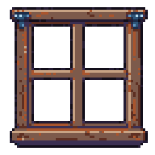
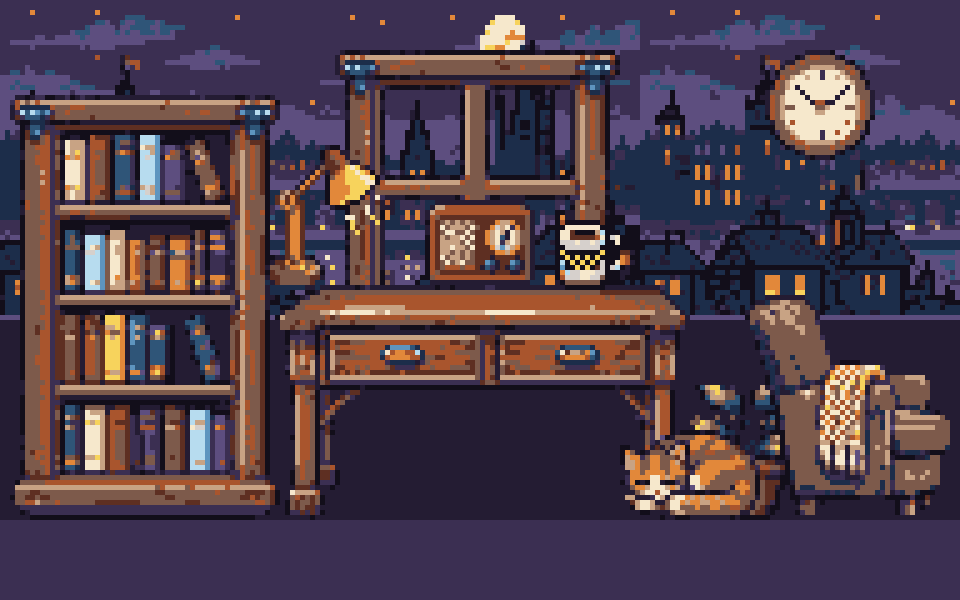
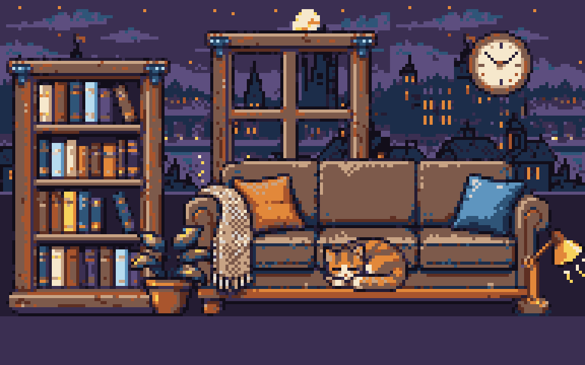
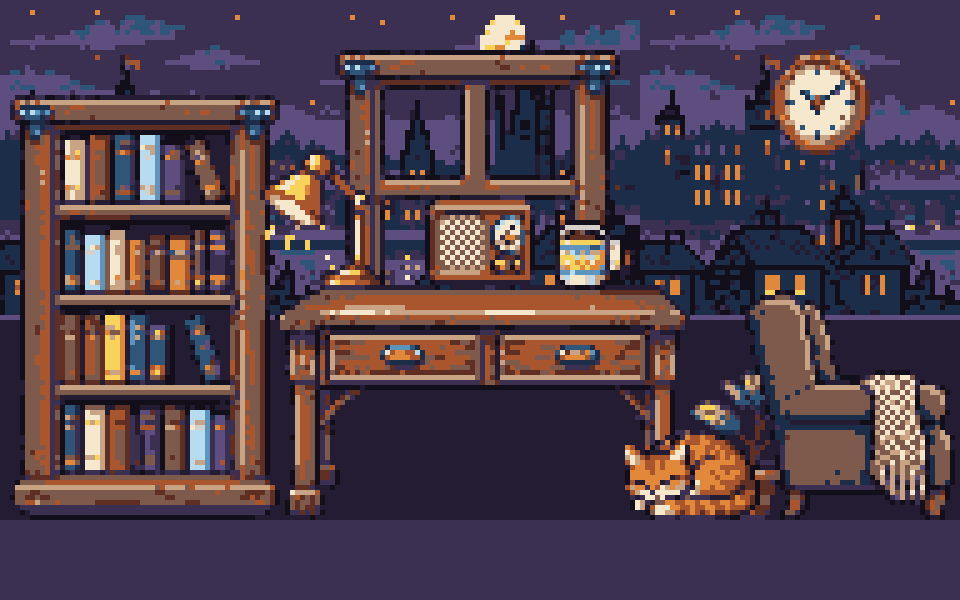
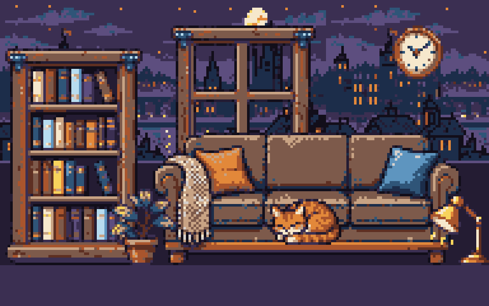
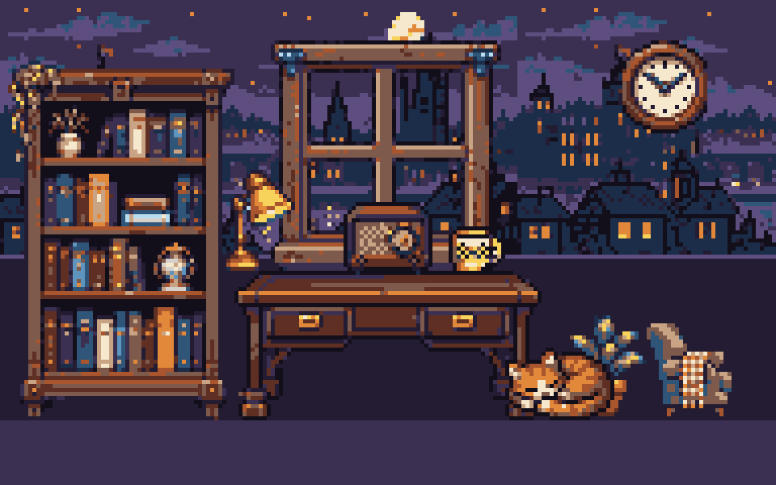
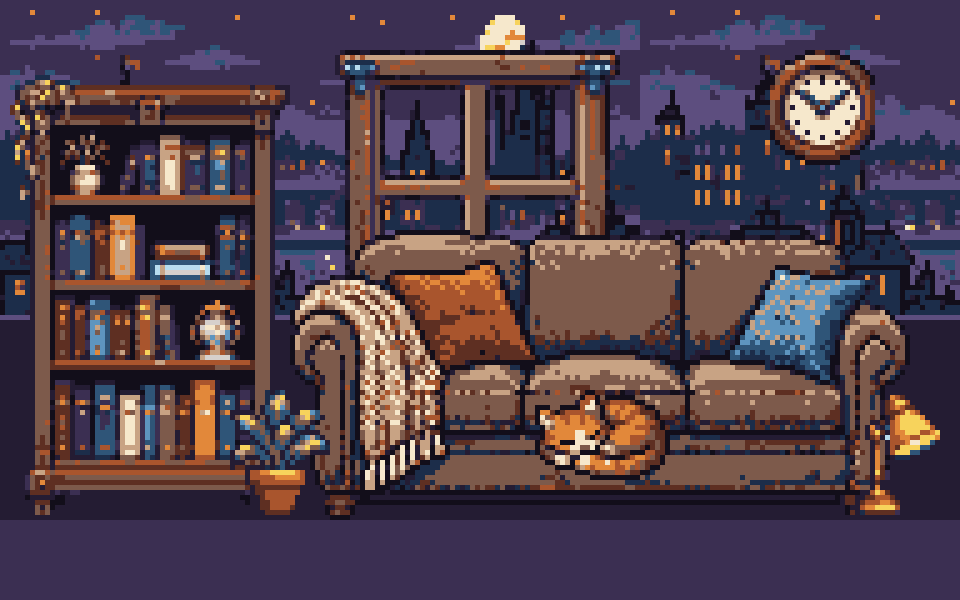
| prop | style | crop | shrink | plain | crop2 |
|---|---|---|---|---|---|
| sofa-128 128x128 native 2.6 x 1.0 m | 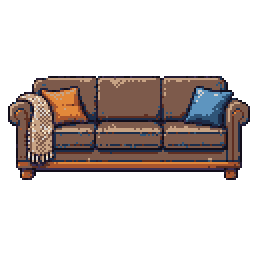 13 col, trim 121x52 (41% h), 1 isl, outline 96%, busy 76%, Δanchor 0.26 | 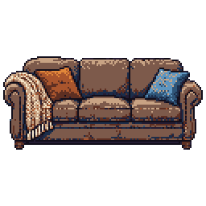 11 col, trim 124x58 (45% h), 1 isl, outline 99%, busy 79%, Δanchor 0.27 | |||
| bookshelf-96 96x96 native 1.0 x 2.3 m | 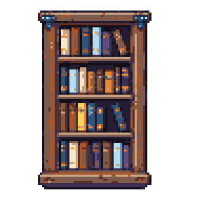 16 col, trim 54x85 (89% h), 1 isl, outline 97%, busy 94%, Δanchor 0.33 | 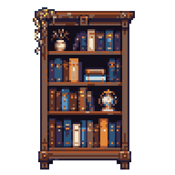 15 col, trim 56x89 (93% h), 1 isl, outline 71%, busy 91%, Δanchor 0.39 | |||
| desk-96x64 96x64 native 2.2 x 0.75 m | 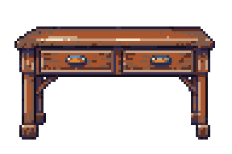 13 col, trim 83x47 (73% h), 1 isl, outline 96%, busy 96%, Δanchor 0.14 | 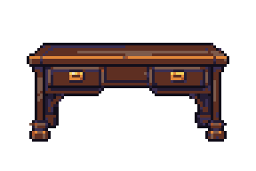 9 col, trim 76x37 (58% h), 1 isl, outline 98%, busy 94%, Δanchor 0.18 | |||
| armchair-48 48x48 native 1.0 x 1.0 m | PL create-image-pro-flash 422 {"detail":"1 validation error for RequestGenerateImageProFlash\n Value error, Style image must fit the native canvas. Crop the re | 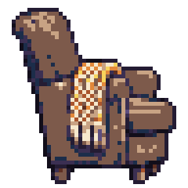 12 col, trim 42x45 (94% h), 1 isl, outline 96%, busy 82%, Δanchor 0.24 | 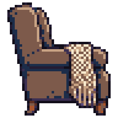 10 col, trim 42x46 (96% h), 1 isl, outline 96%, busy 78%, Δanchor 0.35 | 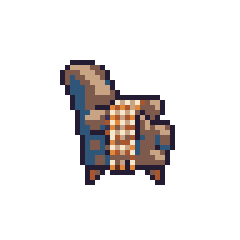 9 col, trim 23x25 (52% h), 1 isl, outline 99%, busy 95%, Δanchor 0.22 | |
| lamp-32 32x32 native 0.5 m | PL create-image-pro-flash 422 {"detail":"1 validation error for RequestGenerateImageProFlash\n Value error, Style image must fit the native canvas. Crop the re | 8 islands 11 col, trim 25x29 (91% h), 8 isl, outline 45%, busy 89%, Δanchor 0.62 | 8 col, trim 26x28 (88% h), 5 isl, outline 49%, busy 93%, Δanchor 0.67 | 10 col, trim 18x26 (81% h), 1 isl, outline 76%, busy 95%, Δanchor 0.40 | 10 col, trim 22x29 (91% h), 1 isl, outline 97%, busy 97%, Δanchor 0.45 |
| plant-32 32x32 native 0.7 m | PL create-image-pro-flash 422 {"detail":"1 validation error for RequestGenerateImageProFlash\n Value error, Style image must fit the native canvas. Crop the re | 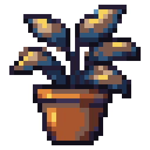 12 col, trim 28x30 (94% h), 1 isl, outline 93%, busy 94%, Δanchor 0.13 | 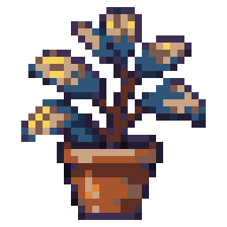 11 col, trim 26x30 (94% h), 1 isl, outline 34%, busy 97%, Δanchor 0.66 | 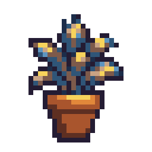 10 col, trim 20x27 (84% h), 1 isl, outline 86%, busy 95%, Δanchor 0.18 | 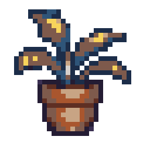 10 col, trim 25x27 (84% h), 1 isl, outline 26%, busy 95%, Δanchor 0.74 |
| cat-32x24 32x24 custom 0.8 x 0.6 m | PL create-image-pro-flash 422 {"detail":"1 validation error for RequestGenerateImageProFlash\n Value error, Style image must fit the native canvas. Crop the re | 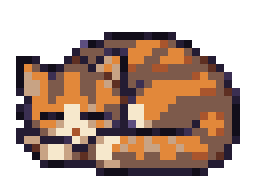 10 col, trim 28x18 (75% h), 1 isl, outline 94%, busy 96%, Δanchor 0.22 | 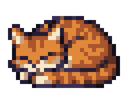 9 col, trim 28x18 (75% h), 1 isl, outline 76%, busy 96%, Δanchor 0.33 | 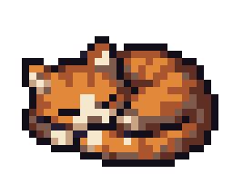 8 col, trim 27x18 (75% h), 1 isl, outline 97%, busy 97%, Δanchor 0.31 | 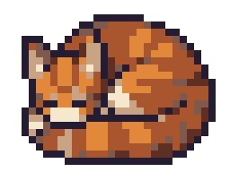 7 col, trim 27x21 (88% h), 1 isl, outline 99%, busy 93%, Δanchor 0.27 |
| clock-24 24x24 native 0.5 m | PL create-image-pro-flash 422 {"detail":"1 validation error for RequestGenerateImageProFlash\n Value error, Style image must fit the native canvas. Crop the re | 7 col, trim 22x22 (92% h), 1 isl, outline 100%, busy 83%, Δanchor 0.59 | 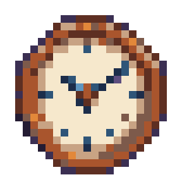 12 col, trim 20x21 (88% h), 1 isl, outline 7%, busy 86%, Δanchor 1.00 | 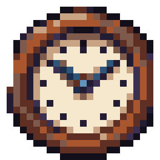 11 col, trim 22x23 (96% h), 1 isl, outline 73%, busy 92%, Δanchor 0.56 | 9 col, trim 22x22 (92% h), 1 isl, outline 95%, busy 86%, Δanchor 0.44 |
| radio-24 24x24 native 0.5 m | PL create-image-pro-flash 422 {"detail":"1 validation error for RequestGenerateImageProFlash\n Value error, Style image must fit the native canvas. Crop the re | 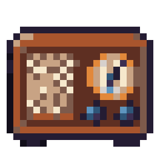 12 col, trim 22x18 (75% h), 1 isl, outline 100%, busy 97%, Δanchor 0.18 | 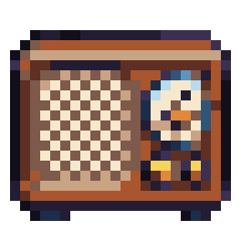 14 col, trim 22x19 (79% h), 1 isl, outline 83%, busy 100%, Δanchor 1.54 | 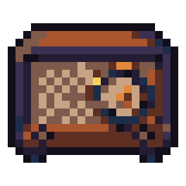 10 col, trim 22x18 (75% h), 1 isl, outline 97%, busy 99%, Δanchor 0.36 | 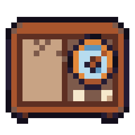 10 col, trim 22x19 (79% h), 1 isl, outline 100%, busy 91%, Δanchor 0.21 |
| mug-16 16x16 native 0.1 m (floor) | PL create-image-pro-flash 422 {"detail":"1 validation error for RequestGenerateImageProFlash\n Value error, Style image must fit the native canvas. Crop the re | 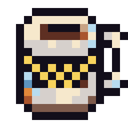 11 col, trim 14x14 (88% h), 1 isl, outline 96%, busy 97%, Δanchor 0.91 | 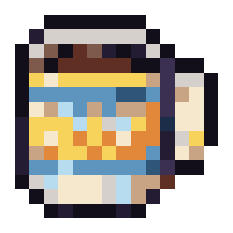 14 col, trim 14x14 (88% h), 1 isl, outline 95%, busy 100%, Δanchor 0.54 | 12 col, trim 14x12 (75% h), 1 isl, outline 100%, busy 99%, Δanchor 0.61 | 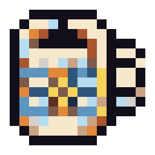 13 col, trim 14x14 (88% h), 1 isl, outline 95%, busy 99%, Δanchor 0.61 |
| prop | style | crop | shrink | plain | crop2 |
|---|---|---|---|---|---|
| armchair-48 48x48 native | PL create-image-pro-flash 422 {"detail":"1 validation error for RequestGenerateImageProFlash\n Value error, Style image must fit the native canvas. Crop the re | 12 col, trim 42x45 (94% h), 1 isl, outline 96%, busy 82%, Δanchor 0.24 | 10 col, trim 42x46 (96% h), 1 isl, outline 96%, busy 78%, Δanchor 0.35 | 9 col, trim 23x25 (52% h), 1 isl, outline 99%, busy 95%, Δanchor 0.22 | |
| armchair-40 40x40 custom custom vs 48 | PL create-image-pro-flash 422 {"detail":"1 validation error for RequestGenerateImageProFlash\n Value error, Style image must fit the native canvas. Crop the re | 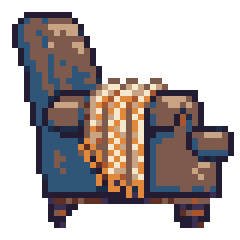 10 col, trim 37x36 (90% h), 1 isl, outline 74%, busy 89%, Δanchor 0.31 | 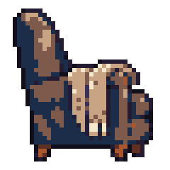 9 col, trim 33x36 (90% h), 1 isl, outline 98%, busy 85%, Δanchor 0.22 | 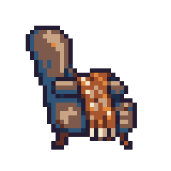 9 col, trim 26x29 (73% h), 1 isl, outline 96%, busy 96%, Δanchor 0.19 | |
| plant-32 32x32 native | PL create-image-pro-flash 422 {"detail":"1 validation error for RequestGenerateImageProFlash\n Value error, Style image must fit the native canvas. Crop the re | 12 col, trim 28x30 (94% h), 1 isl, outline 93%, busy 94%, Δanchor 0.13 | 11 col, trim 26x30 (94% h), 1 isl, outline 34%, busy 97%, Δanchor 0.66 | 10 col, trim 20x27 (84% h), 1 isl, outline 86%, busy 95%, Δanchor 0.18 | 10 col, trim 25x27 (84% h), 1 isl, outline 26%, busy 95%, Δanchor 0.74 |
| plant-36 36x36 custom custom vs 32 | PL create-image-pro-flash 422 {"detail":"1 validation error for RequestGenerateImageProFlash\n Value error, Style image must fit the native canvas. Crop the re | 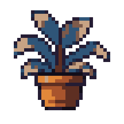 9 col, trim 28x29 (81% h), 1 isl, outline 78%, busy 91%, Δanchor 0.26 | 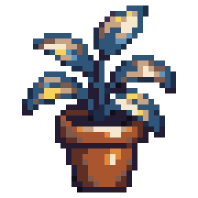 13 col, trim 28x34 (94% h), 1 isl, outline 37%, busy 95%, Δanchor 0.66 | 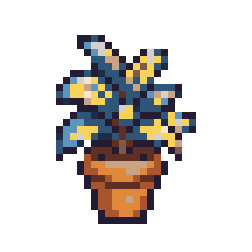 12 col, trim 20x27 (75% h), 1 isl, outline 71%, busy 99%, Δanchor 0.44 | |
| lamp-32 32x32 native | PL create-image-pro-flash 422 {"detail":"1 validation error for RequestGenerateImageProFlash\n Value error, Style image must fit the native canvas. Crop the re | 8 islands 11 col, trim 25x29 (91% h), 8 isl, outline 45%, busy 89%, Δanchor 0.62 | 8 col, trim 26x28 (88% h), 5 isl, outline 49%, busy 93%, Δanchor 0.67 | 10 col, trim 18x26 (81% h), 1 isl, outline 76%, busy 95%, Δanchor 0.40 | 10 col, trim 22x29 (91% h), 1 isl, outline 97%, busy 97%, Δanchor 0.45 |
| lamp-28 28x28 custom custom vs 32 | PL create-image-pro-flash 422 {"detail":"1 validation error for RequestGenerateImageProFlash\n Value error, Style image must fit the native canvas. Crop the re | 9 col, trim 21x23 (82% h), 1 isl, outline 61%, busy 99%, Δanchor 0.54 | 11 col, trim 24x26 (93% h), 6 isl, outline 63%, busy 95%, Δanchor 0.49 | 12 col, trim 20x25 (89% h), 1 isl, outline 89%, busy 99%, Δanchor 0.38 | |
| cat-32x24 32x24 custom | PL create-image-pro-flash 422 {"detail":"1 validation error for RequestGenerateImageProFlash\n Value error, Style image must fit the native canvas. Crop the re | 10 col, trim 28x18 (75% h), 1 isl, outline 94%, busy 96%, Δanchor 0.22 | 9 col, trim 28x18 (75% h), 1 isl, outline 76%, busy 96%, Δanchor 0.33 | 8 col, trim 27x18 (75% h), 1 isl, outline 97%, busy 97%, Δanchor 0.31 | 7 col, trim 27x21 (88% h), 1 isl, outline 99%, busy 93%, Δanchor 0.27 |
| cat-24 24x24 native native vs 32x24 | PL create-image-pro-flash 422 {"detail":"1 validation error for RequestGenerateImageProFlash\n Value error, Style image must fit the native canvas. Crop the re | 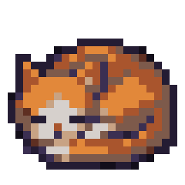 9 col, trim 22x17 (71% h), 1 isl, outline 98%, busy 93%, Δanchor 0.18 | 9 col, trim 24x18 (75% h), 1 isl, outline 91%, busy 97%, Δanchor 0.28 | 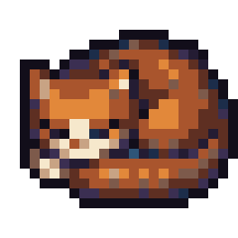 11 col, trim 22x18 (75% h), 1 isl, outline 100%, busy 98%, Δanchor 0.13 | |
| clock-24 24x24 native | PL create-image-pro-flash 422 {"detail":"1 validation error for RequestGenerateImageProFlash\n Value error, Style image must fit the native canvas. Crop the re | 7 col, trim 22x22 (92% h), 1 isl, outline 100%, busy 83%, Δanchor 0.59 | 12 col, trim 20x21 (88% h), 1 isl, outline 7%, busy 86%, Δanchor 1.00 | 11 col, trim 22x23 (96% h), 1 isl, outline 73%, busy 92%, Δanchor 0.56 | 9 col, trim 22x22 (92% h), 1 isl, outline 95%, busy 86%, Δanchor 0.44 |
| clock-20 20x20 custom custom vs 24 | PL create-image-pro-flash 422 {"detail":"1 validation error for RequestGenerateImageProFlash\n Value error, Style image must fit the native canvas. Crop the re | 9 col, trim 19x19 (95% h), 1 isl, outline 100%, busy 86%, Δanchor 0.51 | 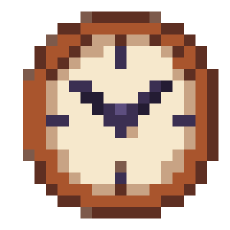 8 col, trim 17x18 (90% h), 1 isl, outline 0%, busy 85%, Δanchor 1.09 | 10 col, trim 16x17 (85% h), 1 isl, outline 59%, busy 91%, Δanchor 0.62 | |
| mug-16 16x16 native | PL create-image-pro-flash 422 {"detail":"1 validation error for RequestGenerateImageProFlash\n Value error, Style image must fit the native canvas. Crop the re | 11 col, trim 14x14 (88% h), 1 isl, outline 96%, busy 97%, Δanchor 0.91 | 14 col, trim 14x14 (88% h), 1 isl, outline 95%, busy 100%, Δanchor 0.54 | 12 col, trim 14x12 (75% h), 1 isl, outline 100%, busy 99%, Δanchor 0.61 | 13 col, trim 14x14 (88% h), 1 isl, outline 95%, busy 99%, Δanchor 0.61 |
| mug-20 20x20 custom custom vs 16 | PL create-image-pro-flash 422 {"detail":"1 validation error for RequestGenerateImageProFlash\n Value error, Style image must fit the native canvas. Crop the re | 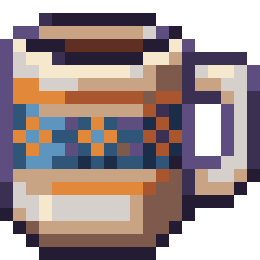 13 col, trim 20x19 (95% h), 1 isl, outline 49%, busy 99%, Δanchor 0.59 | 9 col, trim 17x16 (80% h), 1 isl, outline 0%, busy 94%, Δanchor 1.09 | 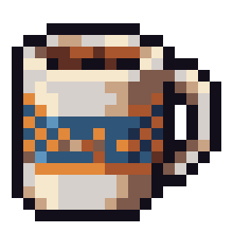 11 col, trim 18x17 (85% h), 1 isl, outline 100%, busy 97%, Δanchor 0.45 | |
| desk-96x64 96x64 native | 13 col, trim 83x47 (73% h), 1 isl, outline 96%, busy 96%, Δanchor 0.14 | 9 col, trim 76x37 (58% h), 1 isl, outline 98%, busy 94%, Δanchor 0.18 | |||
| desk-88x32 88x32 custom custom vs 96x64 | PL create-image-pro-flash 422 {"detail":"1 validation error for RequestGenerateImageProFlash\n Value error, Style image must fit the native canvas. Crop the re | 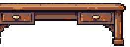 9 col, trim 85x29 (91% h), 2 isl, outline 100%, busy 97%, Δanchor 0.15 | 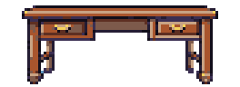 9 col, trim 72x29 (91% h), 1 isl, outline 74%, busy 97%, Δanchor 0.30 | 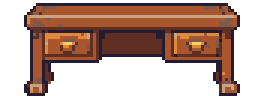 7 col, trim 72x31 (97% h), 1 isl, outline 98%, busy 84%, Δanchor 0.28 |
Frame 0 is the still; frames snapped to the palette before gating. Gate: motion ≥ 1% per step, drift from the still ≤ 10%, seam ≤ 1.5x the mean step.
| strip | frames returned (first = still?) | off-palette before snap | motion per step | drift | seam | gate |
|---|---|---|---|---|---|---|
| plain/cat-32x24 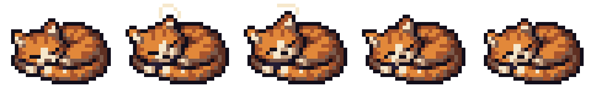 | 5 (yes) | 0% | 16%, 5%, 13%, 2% | 8% | 8% | pass |
| crop/cat-32x24 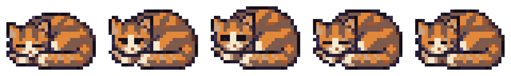 | 5 (yes) | 0% | 22%, 26%, 22%, 8% | 19% | 19% | drift 18.6% > 10% |
| crop/cat-24 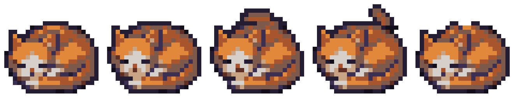 | 5 (yes) | 0% | 16%, 8%, 9%, 20% | 3% | 3% | pass |
Δ anchor: mean distance from the anchor on the style vector (colours used, dark-outline share, busy share, dither, contrast); style-lock measured 0.49 (styled) vs 0.52-0.55 (plain) at 64 px. palette use vs anchor: 0 same, 1 disjoint.
| bucket | condition | n | Δ anchor | palette use vs anchor | colours | dark outline | busy | hard fails | warnings |
|---|---|---|---|---|---|---|---|---|---|
| small (16-32) | crop | 10 | 0.45 | 0.48 | 10.30 | 84% | 93% | 0 | 1 |
| small (16-32) | shrink | 10 | 0.77 | 0.52 | 10.50 | 50% | 94% | 0 | 0 |
| small (16-32) | plain | 10 | 0.40 | 0.52 | 10.50 | 88% | 96% | 0 | 0 |
| small (16-32) | crop2 | 6 | 0.45 | 0.52 | 9.83 | 85% | 93% | 0 | 0 |
| mid (48-64) | crop | 3 | 0.27 | 0.40 | 10.33 | 83% | 88% | 0 | 0 |
| mid (48-64) | shrink | 3 | 0.41 | 0.40 | 10.67 | 77% | 86% | 0 | 0 |
| mid (48-64) | plain | 3 | 0.29 | 0.50 | 10.00 | 88% | 96% | 0 | 0 |
| large (96-128) | style | 3 | 0.24 | 0.23 | 14.00 | 96% | 89% | 0 | 0 |
| large (96-128) | crop | 1 | 0.15 | 0.26 | 9.00 | 100% | 97% | 0 | 0 |
| large (96-128) | shrink | 1 | 0.30 | 0.28 | 9.00 | 74% | 97% | 0 | 0 |
| large (96-128) | plain | 4 | 0.28 | 0.39 | 10.50 | 92% | 87% | 0 | 0 |